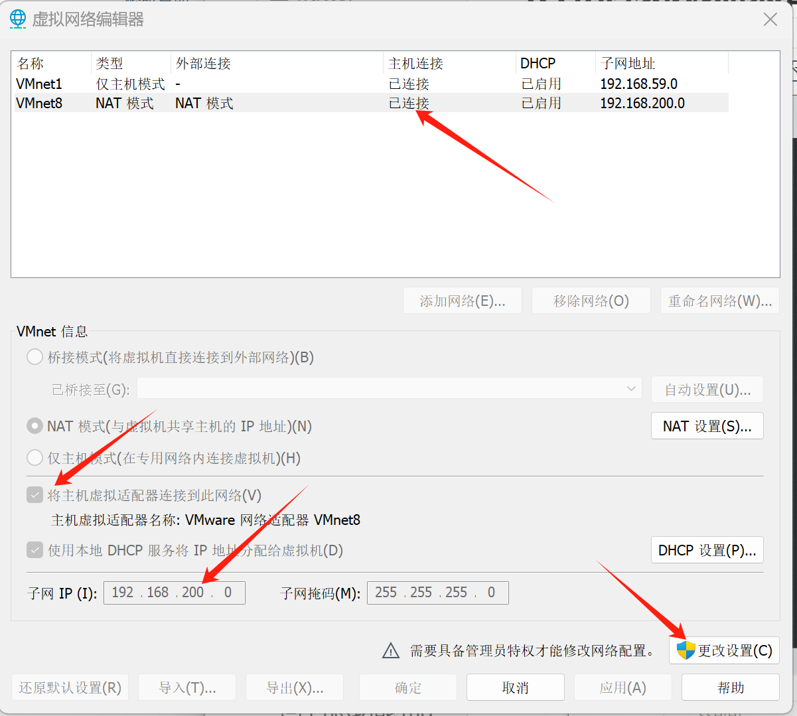
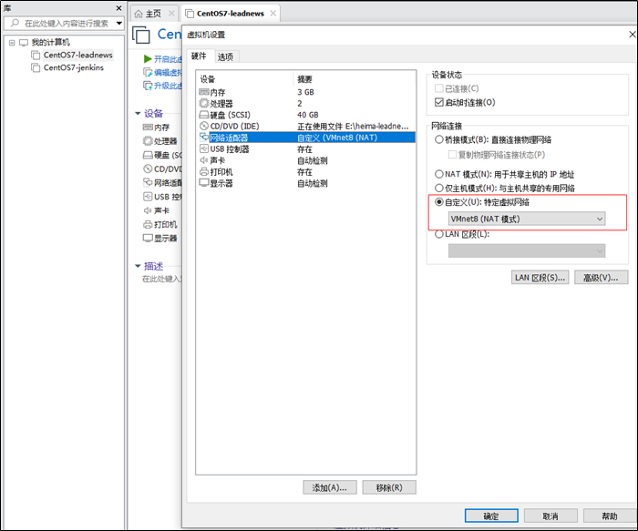

环境搭建¶
| 开发工具 | 版本号 | 安装位置 |
|---|---|---|
| IntelliJ-IDEA | 2024 | 个人电脑 |
| JDK | 17 | 个人电脑 |
| Maven | 3.8.8 | 个人电脑 |
| Git | latest | 个人电脑 |
| Alibaba Cloud Linux | 4 LTS | 阿里云 ECS |
| Docker（Moby） | 系统软件源当前版本 | 阿里云 ECS |
| MySQL | 8.0 | Docker |
| nacos | 1.4.1 | Docker |
| rabbitmq | 3.8.34 | Docker |
| redis | 6.2.7 | Docker |
| xxl-job-admin | 2.3.1 | Docker |
| minio | RELEASE.2022-09-07 | Docker |
| elasticsearch | 7.12.1 | Docker |
| kibana | 7.12.1 | Docker |
| gogs | 0.13.0 | Docker |
| nginx | 1.12.2 | Docker |
JDK¶
https://www.oracle.com/java/technologies/downloads/
Java Development Kit是 Sun 公司（已被 Oracle 收购）针对 Java 开发员的软件开发工具包，它是用于开发和运行 Java 程序的核心工具。
Java SE 8（LTS）、Java SE 11（LTS）、Java SE 17（LTS）企业用的比较多，长期支持版本。
JDK 包含以下组件：
- Java 编译器（javac）：
-
将 Java 源代码编译为字节码（.class 文件），这些字节码可以在 Java 虚拟机（JavaVirtualMachines）上运行。
-
Java 运行时环境（JRE）：
-
包含 JVM 和 Java 类库，允许你运行 Java 应用程序。
-
Java 类库：
-
一组预定义的类和接口，提供丰富的功能供开发者使用，如数据结构、网络和文件 I/O 等。
-
开发工具：
- 包括调试器（jdb）、文档生成工具（javadoc）、打包工具（jar）等，帮助开发者编写、调试和打包 Java 应用。
JDK 是 Java 开发人员的基本工具，必须安装在开发环境中以编译和运行 Java 程序。
Mac配置JDK¶
-
下载和安装 JDK。例如，访问 Oracle JDK Archive 找到旧版本。
-
配置环境变量： 在
~/.zshrc或~/.bash_profile中设置JAVA_HOME，例如：
export JAVA_HOME=/Library/Java/JavaVirtualMachines/jdk-11.jdk/Contents/Home
export PATH="$JAVA_HOME/bin:$PATH"
- 运行以下命令以应用更改：
source ~/.zshrc
完成这些步骤后，你应该能够使用所需版本的 JDK。可以通过 java -version 和 javac -version 来验证安装是否成功。
idea¶
写代码的工具。https://www.jetbrains.com/
Mac激活：https://www.quanxiaoha.com/idea-pojie/idea-pojie-202621.html
快捷键¶
- ctrl+d：复制一行
- ctrl+y：删除一行
- sout：
System.out.println(); - alt+Insert：类构造器，可以选择多个属性
- ctrl+i：service的imp类中，实现接口方法。
- alt+enter：为选中的ServiceImpl类，创建测试类。
- alt+shift+t：选中service接口类，会创建对应的测试文件。
- ctrl+alt+m：选中的代码，提取为方法。
虚拟机¶
-
安装VMware
-
VMware打开虚拟机，选择ContOS7-hmtt.vmx文件，先挂载上。
-
VMware-编辑-虚拟网络编辑器，修改虚拟网络地址（NAT），把网段改为200（当前挂载的虚拟机已固定ip地址）

-
指定系统的网络为刚才设置的网络（NAT）。
-
修改虚拟机的网络模式为NAT

-
启动虚拟机，用户名：root 密码：itcast，当前虚拟机的ip已手动固定（静态IP)，地址为：192.168.200.130
- 使用FinalShell客户端链接
输入虚拟主机ip、端口、用户名、密码，进行连接。
登录 ECS 服务器¶
下面的 SSH 命令在个人电脑终端中执行；其中 ECS_PUBLIC_IP 需要替换为 ECS 实例的实际公网 IP。
使用密码登录¶
在 Mac 中打开“终端”，执行：
ssh root@ECS_PUBLIC_IP
首次连接时会显示服务器指纹确认信息：
Are you sure you want to continue connecting (yes/no/[fingerprint])?
确认公网 IP 无误后输入 yes，再输入 ECS 操作系统的 root 登录密码。输入密码时终端不会显示字符，这是正常现象。
看到类似以下的提示符，说明已进入服务器：
[root@iZxxxxxxxxxxxx ~]#
使用私钥登录¶
如果创建 ECS 时选择了密钥对，先将私钥文件权限设置为仅当前用户可读，再连接服务器。以下命令假定私钥文件名为 ecs-login.pem：
chmod 600 ~/Downloads/ecs-login.pem
ssh -i ~/Downloads/ecs-login.pem root@ECS_PUBLIC_IP
私钥文件名和保存位置不同时，应相应修改命令。不要把私钥或登录密码提交到 Git 仓库。
退出和连接排查¶
执行以下命令或按 Control+D 退出 ECS：
exit
如果连接失败，按错误信息检查：
Connection timed out：确认 ECS 正在运行且公网 IP 正确，并在阿里云安全组入方向允许当前电脑的公网 IP 访问 TCP22端口。不要为了排查而长期允许所有公网地址访问22端口。Connection refused：确认 ECS 中的 SSH 服务正在运行，并确认连接端口是否仍为默认的22。Permission denied：确认用户名、ECS 登录密码或私钥是否正确。本文按root用户编写；如果实例禁用了root远程登录，应使用创建实例时配置的实际系统用户。
也可以使用 ECS 控制台的“远程连接”登录服务器。
Docker¶
Docker 的安装命令取决于宿主机操作系统；安装完成后的镜像、容器和 Docker Compose 命令基本一致。先确认系统，再选择对应的安装方式。以 root 用户登录时可以省略命令中的 sudo。
不同系统安装部分¶
确认操作系统¶
cat /etc/os-release
重点查看 NAME、VERSION_ID 和 VERSION_CODENAME。不要把一个发行版的软件源配置照搬到另一个发行版。
Alibaba Cloud Linux 4¶
安装 Moby（推荐）¶
Alibaba Cloud Linux 4 默认通过 Moby 提供容器引擎。Moby 提供的 docker、dockerd、镜像、容器和 API 与 Docker Engine 的日常用法一致。
先删除可能配置错误的 Docker CE 仓库，再通过系统软件源安装：
sudo rm -f /etc/yum.repos.d/docker*.repo
sudo dnf clean all
sudo dnf makecache
sudo dnf install -y moby docker-compose-plugin
安装 Docker CE（可选）¶
Moby 与 Docker CE 二选一即可，不要同时安装。Alibaba Cloud Linux 4 的 $releasever 为 4，不能直接使用 Docker 的 CentOS 仓库，否则会访问不存在的 centos/4 路径。
需要 Docker CE 时，使用阿里云 ECS 内网镜像，并将仓库版本固定为 Docker 支持的 CentOS 9：
sudo rm -f /etc/yum.repos.d/docker*.repo
sudo wget -O /etc/yum.repos.d/docker-ce.repo \
http://mirrors.cloud.aliyuncs.com/docker-ce/linux/centos/docker-ce.repo
sudo sed -i \
's|https://mirrors.aliyun.com|http://mirrors.cloud.aliyuncs.com|g' \
/etc/yum.repos.d/docker-ce.repo
sudo sed -i \
's|$releasever|9|g' \
/etc/yum.repos.d/docker-ce.repo
sudo dnf clean all
sudo dnf makecache
sudo dnf install -y \
docker-ce \
docker-ce-cli \
containerd.io \
docker-buildx-plugin \
docker-compose-plugin
如果之前已经安装 Moby，应先卸载 Moby 相关软件包再安装 Docker CE。卸载软件包不会自动删除 /var/lib/docker/ 中已有的镜像、容器和存储卷，但切换前仍应备份重要数据。
Ubuntu¶
以下命令适用于 Docker 官方当前支持的 64 位 Ubuntu LTS 版本：
sudo apt update
sudo apt install -y ca-certificates curl
sudo install -m 0755 -d /etc/apt/keyrings
sudo curl -fsSL https://download.docker.com/linux/ubuntu/gpg \
-o /etc/apt/keyrings/docker.asc
sudo chmod a+r /etc/apt/keyrings/docker.asc
sudo tee /etc/apt/sources.list.d/docker.sources > /dev/null <<EOF
Types: deb
URIs: https://download.docker.com/linux/ubuntu
Suites: $(. /etc/os-release && echo "${UBUNTU_CODENAME:-$VERSION_CODENAME}")
Components: stable
Architectures: $(dpkg --print-architecture)
Signed-By: /etc/apt/keyrings/docker.asc
EOF
sudo apt update
sudo apt install -y \
docker-ce \
docker-ce-cli \
containerd.io \
docker-buildx-plugin \
docker-compose-plugin
Debian¶
Debian 使用独立的软件源，不要把 Ubuntu 的仓库地址直接用于 Debian：
sudo apt update
sudo apt install -y ca-certificates curl
sudo install -m 0755 -d /etc/apt/keyrings
sudo curl -fsSL https://download.docker.com/linux/debian/gpg \
-o /etc/apt/keyrings/docker.asc
sudo chmod a+r /etc/apt/keyrings/docker.asc
sudo tee /etc/apt/sources.list.d/docker.sources > /dev/null <<EOF
Types: deb
URIs: https://download.docker.com/linux/debian
Suites: $(. /etc/os-release && echo "$VERSION_CODENAME")
Components: stable
Architectures: $(dpkg --print-architecture)
Signed-By: /etc/apt/keyrings/docker.asc
EOF
sudo apt update
sudo apt install -y \
docker-ce \
docker-ce-cli \
containerd.io \
docker-buildx-plugin \
docker-compose-plugin
CentOS Stream¶
Docker 官方当前支持 CentOS Stream 9 和 10，不应在已经停止维护的 CentOS 7 上继续搭建新环境：
sudo dnf -y install dnf-plugins-core
sudo dnf config-manager --add-repo \
https://download.docker.com/linux/centos/docker-ce.repo
sudo dnf install -y \
docker-ce \
docker-ce-cli \
containerd.io \
docker-buildx-plugin \
docker-compose-plugin
Rocky Linux、AlmaLinux 等兼容发行版不应仅根据“兼容 RHEL”就直接照搬命令，应优先查看该发行版和 Docker 的当前支持说明。
通用部分¶
下面的内容适用于已经安装 Docker Engine、Moby 或 Docker Desktop 的环境。Linux 服务器通常由 systemd 管理 Docker 服务；Docker Desktop 的启动和更新由桌面应用管理。
启动与验证¶
在使用 systemd 的 Linux 中启动 Docker，并设置开机自启：
sudo systemctl enable --now docker
验证 Engine、Compose 和容器运行能力：
docker version
docker compose version
sudo docker run --rm hello-world
如果拉取 hello-world 失败，先按照后文配置镜像加速器，再重新执行。
配置镜像加速器¶
以下 /etc/docker/daemon.json 配置适用于 Linux Docker Engine 和 Moby。Docker Desktop 应在应用设置的 Docker Engine 配置中添加同一 JSON 选项。
- 登录阿里云控制台，进入
容器镜像服务 -> 镜像工具 -> 镜像加速器，取得账号专属地址。 - 如果
/etc/docker/daemon.json已存在，先备份并合并配置，不要直接覆盖其中的其他选项。 - 创建或修改配置：
sudo mkdir -p /etc/docker
sudo vi /etc/docker/daemon.json
{
"registry-mirrors": [
"https://<your-accelerator-id>.mirror.aliyuncs.com"
]
}
重启 Docker 并检查配置：
# 先检查 JSON 语法，避免因配置错误导致 Docker 无法启动
python3 -m json.tool /etc/docker/daemon.json > /dev/null
sudo systemctl daemon-reload
sudo systemctl restart docker
docker info | sed -n '/Registry Mirrors/,+5p'
在输出的 Registry Mirrors 中看到专属地址，说明配置已生效。
阿里云 ACR 官方说明当前镜像加速器已停止同步最新镜像，因此已配置加速器也不能保证所有新标签都能拉取。生产环境应将已验证的镜像同步到自己的 ACR 仓库，不要长期依赖 Docker Hub 实时拉取。
配置非 root 用户（可选）¶
docker 用户组可以控制具有 root 权限的 Docker daemon，因此加入该组基本等同于获得 root 权限，只应添加可信用户。
sudo usermod -aG docker <username>
退出并重新登录，或者执行 newgrp docker，使用户组变更生效。当前已经使用 root 用户时不需要执行这一步。
常用命令¶
# 查看镜像
docker image ls
# 查看运行中的容器
docker container ls
# 查看全部容器
docker container ls -a
# 查看并持续跟踪日志
docker logs -f <container_name>
# 启动、停止、重启和删除指定容器
docker start <container_name>
docker stop <container_name>
docker restart <container_name>
docker rm <container_name>
# 查看 Docker 服务状态
systemctl status docker
不要在未确认影响范围时批量重启所有容器。生产或长期运行的服务应使用 Docker Compose 管理。
Docker Compose¶
常用操作：
# 创建并在后台启动服务
docker compose up -d
# 查看服务状态和日志
docker compose ps
docker compose logs -f
# 重启指定服务
docker compose restart <service_name>
# 停止并删除容器和网络，默认保留命名卷
docker compose down
MySQL¶
选择安装方式¶
MySQL 安装在 ECS 服务器上，可以原生运行，也可以运行在 Docker 容器中。
| 方案 | 适用场景 | 注意事项 |
|---|---|---|
| Alibaba Cloud Linux 4 原生安装 | 单台 ECS、个人项目、Java 服务直接运行在宿主机 | 使用系统仓库的 MySQL 8.0，不依赖 Docker Hub，当前推荐 |
| Docker Compose 安装 | 应用和数据库都用容器管理 | 使用 MySQL 8.0，当前已在阿里云镜像加速环境验证 |
| RDS MySQL | 正式业务、希望减少备份和运维工作 | 费用更高，但备份、监控和可用性由云服务管理 |
方案一：Alibaba Cloud Linux 4 原生安装（推荐）¶
阿里云当前在 Alibaba Cloud Linux 4 软件源中维护 MySQL 8.0。先确认操作系统和仓库中的实际版本：
cat /etc/os-release
sudo dnf makecache
sudo dnf info mysql-server
如果能查到 mysql-server 包，直接安装并启动：
sudo dnf install -y mysql-server
sudo systemctl enable --now mysqld
mysql --version
sudo systemctl status mysqld --no-pager
如果 dnf info mysql-server 提示找不到软件包，先检查当前启用的 Alibaba Cloud Linux 4 软件源，不要改用 CentOS 仓库：
sudo dnf repolist
sudo dnf search mysql-server
完成 MySQL 安全初始化：
sudo mysql_secure_installation
不同软件包的 root 账号初始方式可能不同。如果命令要求输入初始密码，可先查看日志：
sudo grep -i 'temporary password' /var/log/mysqld.log
为业务创建独立数据库和账号，不要让 Java 程序使用 root：
mysql -uroot -p
CREATE DATABASE app CHARACTER SET utf8mb4 COLLATE utf8mb4_0900_ai_ci;
CREATE USER 'app'@'127.0.0.1' IDENTIFIED BY '请替换为高强度密码';
GRANT ALL PRIVILEGES ON app.* TO 'app'@'127.0.0.1';
EXIT;
这组账号设置假定 Java 服务直接运行在 ECS 宿主机，连接地址为：
jdbc:mysql://127.0.0.1:3306/app
ECS 安全组不要向公网开放 3306。如果 Java 服务在 Docker 容器中，优先使用后面的 Compose 方案将应用与 MySQL 加入同一个 Docker 网络，或者使用 RDS。
方案二：Docker Compose 安装 MySQL 8.0（可选）¶
MySQL 在 ECS 的 Docker 容器中运行，数据保存在 ECS 的 Docker 数据卷中。在正式创建容器前，必须先确认 ECS 能从 Docker Hub 或可信的自有 ACR 仓库获取 MySQL 镜像。
本节后面的所有命令都在 ECS 服务器中执行。 可先检查 Docker 和 Compose 是否已安装：
docker version
docker compose version
如果命令不存在，先按前文“Docker -> Alibaba Cloud Linux 4 -> 安装 Moby”完成安装，再继续本节。
安装方式¶
本节不会在 ECS 宿主机上执行 yum install mysql。docker compose pull 会在 ECS 上下载 MySQL 官方镜像，docker compose up -d 会在 ECS 上创建数据卷、网络和容器，并初始化数据库。
不要使用 mysql:latest，避免重新部署时意外升级到不兼容的 MySQL 大版本。
1. 创建配置目录¶
sudo mkdir -p /opt/mysql
sudo chown "$USER":"$USER" /opt/mysql
cd /opt/mysql
MySQL 配置、环境变量和备份都统一放在 /opt/mysql；数据本身保存在后面定义的 Docker 命名卷中。
2. 创建和使用 .env¶
.env 是普通文本文件，用于将密码等可变配置与 compose.yaml 分开。在 /opt/mysql 中创建文件并限制读取权限：
cd /opt/mysql
touch .env
chmod 600 .env
vi .env
可以先执行两次以下命令，分别生成 root 密码和业务账号密码：
openssl rand -base64 24
将生成的密码填入 .env：
MYSQL_ROOT_PASSWORD=请替换为高强度root密码
MYSQL_DATABASE=app
MYSQL_USER=app
MYSQL_PASSWORD=请替换为高强度业务密码
注意：
- 变量名与值之间使用
=，两侧不要加空格。 - Docker Compose 会自动读取与
compose.yaml同目录的.env，并用其中的值替换${变量名}。 .env保存的是明文密码，不要共享、不要提交到 Git 仓库。如果将这套配置放入仓库，应在.gitignore中加入.env。- 可以使用
docker compose config --quiet检查配置和必填变量。不要共享docker compose config的完整输出，其中可能包含已解析的密码。
3. 创建 Compose 配置¶
创建 /opt/mysql/compose.yaml：
services:
mysql:
image: ${MYSQL_IMAGE:-mysql:8.0}
container_name: mysql
restart: unless-stopped
environment:
MYSQL_ROOT_PASSWORD: ${MYSQL_ROOT_PASSWORD:?请在.env中设置MYSQL_ROOT_PASSWORD}
MYSQL_DATABASE: ${MYSQL_DATABASE:-app}
MYSQL_USER: ${MYSQL_USER:-app}
MYSQL_PASSWORD: ${MYSQL_PASSWORD:?请在.env中设置MYSQL_PASSWORD}
TZ: Asia/Shanghai
volumes:
- mysql_data:/var/lib/mysql
healthcheck:
test: ["CMD-SHELL", "mysqladmin ping -h localhost -uroot -p$$MYSQL_ROOT_PASSWORD"]
interval: 10s
timeout: 5s
retries: 10
start_period: 30s
networks:
- backend
volumes:
mysql_data:
networks:
backend:
这个配置不会把 MySQL 端口暴露到公网。Java 服务也部署在 Docker 中时，将它加入同一个 backend 网络，并使用以下地址连接：
jdbc:mysql://mysql:3306/app
如果只需要在 Mac 的 IDEA Database 工具中通过 ECS 公网 IP 直接连接 MySQL，可以在 MySQL 服务中增加以下端口映射：
ports:
- "0.0.0.0:3306:3306"
端口映射格式为 ECS监听地址:ECS端口:容器端口：
0.0.0.0：监听 ECS 的所有网络接口，使公网 IP 在安全组放行后能够访问该端口。- 第一个
3306：ECS 对外提供的端口。 - 第二个
3306：Docker 容器内 MySQL 监听的端口。
ports 必须位于 mysql 服务内部，并与 image、environment、volumes 等配置保持同一级缩进。
该配置会让 MySQL 监听 ECS 的所有网络接口。必须在阿里云安全组中只允许当前 Mac 的公网 IP（IP/32）访问 TCP 3306，禁止将来源设置为 0.0.0.0/0，并且不要使用 MySQL root 用户远程连接。
4. 安装、启动和检查 MySQL¶
cd /opt/mysql
# 检查 Compose 配置和 .env 必填变量
docker compose config --quiet
# 下载 MySQL 8.0 官方镜像
docker compose pull mysql
# 创建并启动 MySQL 容器
docker compose up -d
# 查看容器状态和初始化日志
docker compose ps
docker compose logs -f mysql
首次启动时，MySQL 会创建 MYSQL_DATABASE、MYSQL_USER 和对应密码。日志显示服务就绪后，按 Ctrl+C 退出日志跟踪，不会停止容器。
健康检查通过后，进入 MySQL 客户端：
docker compose exec mysql mysql -uapp -p app
输入 .env 中的 MYSQL_PASSWORD。使用 exit 退出 MySQL 客户端。
5. IDEA Database 工具通过公网 IP 直接连接¶
先确认 compose.yaml 已按前文配置 0.0.0.0:3306:3306，然后在 ECS 中重新应用配置并检查端口映射：
cd /opt/mysql
docker compose up -d mysql
docker compose ps
docker compose port mysql 3306
端口映射正常时，docker compose ps 的 PORTS 列会包含：
0.0.0.0:3306->3306/tcp
docker compose port mysql 3306 会显示：
0.0.0.0:3306
如果 PORTS 列只有 3306/tcp, 33060/tcp，并且端口查询返回 :0，说明容器内的 MySQL 虽然已经监听 3306，但端口尚未发布到 ECS。检查 ports 的位置和缩进后，再次执行 docker compose up -d mysql。不要执行 docker compose down -v，因为 -v 会删除 MySQL 数据卷。
在阿里云 ECS 安全组中添加入方向规则：
- 协议：TCP
- 目的端口：
3306 - 来源：当前 Mac 的公网 IP，并使用
/32掩码 - 授权策略：允许
家庭或办公网络的公网 IP 发生变化后，需要同步更新安全组规则。不要使用 0.0.0.0/0 向整个公网开放 MySQL。
在 IDEA 的 Database 工具中创建 MySQL 数据源，并填写：
- Host：ECS 的实际公网 IP
- Port：
3306 - Authentication：
User & Password - User：
app - Password：ECS
/opt/mysql/.env中的MYSQL_PASSWORD - Database：
app - URL：
jdbc:mysql://ECS_PUBLIC_IP:3306/app?sslMode=REQUIRED
URL 中的 ECS_PUBLIC_IP 需要替换为 ECS 的实际公网 IP。如果 IDEA 提示 URL 会覆盖上方设置，应确保 URL 中的公网 IP、端口和数据库名与上方字段一致。
在 SSH/SSL 页面中不要启用 SSH tunnel；应启用 SSL，并将 SSL mode 设置为 Require。然后返回 General 页面，点击 Test Connection 测试连接。公网直连不应通过设置 sslMode=DISABLED 来绕过 TLS 错误；如果 TLS 连接失败，应先为 MySQL 正确配置服务器证书。
常见错误：
Communications link failure或连接超时：检查容器端口映射、ECS 安全组来源 IP 和 ECS 系统防火墙。Access denied for user：检查app用户密码。MySQL 数据卷已初始化后，仅修改.env不会改变数据库中的现有密码。- SSL 连接错误：检查 MySQL 服务端 TLS 配置和 IDEA 的 SSL mode，不要改用无加密的公网连接。
.env 修改后如何生效¶
- 首次启动前：修改
.env后执行docker compose up -d即可。 - 普通 Compose 配置变更：修改
.env后再次执行docker compose up -d，Compose 会在需要时重建容器。 - MySQL 已经初始化后：
MYSQL_ROOT_PASSWORD和MYSQL_PASSWORD只用于空数据目录的首次初始化。数据卷中已有数据时，只修改.env不会修改数据库账号密码，应先在 MySQL 中使用ALTER USER修改密码，再同步更新.env。
不要为了修改密码执行 docker compose down -v；-v 会删除 MySQL 数据卷及其中的数据。
认证插件错误¶
MySQL 8.0 默认使用 caching_sha2_password。如果客户端出现以下错误：
Authentication plugin 'caching_sha2_password' cannot be loaded
应升级 MySQL 客户端或 Java 的 MySQL Connector/J 驱动，不要为了兼容旧客户端而把账号降级为 mysql_native_password。该插件在 MySQL 8.0.34 开始弃用，在 MySQL 8.4 中默认禁用，并已在 MySQL 9.0 中移除。
备份数据库¶
云盘快照不能替代数据库逻辑备份。创建备份目录并导出业务数据库：
sudo mkdir -p /opt/mysql/backups
cd /opt/mysql
docker compose exec -T mysql sh -c \
'exec mysqldump --single-transaction -uapp -p"$MYSQL_PASSWORD" app' \
> "backups/app-$(date +%F-%H%M%S).sql"
应通过定时任务执行备份，并将备份文件复制到其他存储位置；不要只保存在同一块 ECS 云盘中。
官方资料¶
- 阿里云：在 Linux 上安装 Docker 和 Docker Compose
- Docker：选择操作系统安装 Docker Engine
- Docker：在 Ubuntu 上安装
- Docker：在 Debian 上安装
- Docker：在 CentOS Stream 上安装
- Docker：Linux 安装后的配置
- Docker：配置 Docker Hub 镜像缓存
- Docker Compose：
.env变量插值 - 阿里云 ACR：配置镜像加速器
- 阿里云 ACR：通过制品订阅获取海外源镜像
- 阿里云：Alibaba Cloud Linux 4 与 3 的区别
- 阿里云：Alibaba Cloud Linux 4 镜像发布记录
- Docker Hub：MySQL 官方镜像
- MySQL：认证插件说明
MySQL自带的系统数据库¶
-
information_schema：提供数据库元数据的访问，比如数据库、表、列的数据类型和访问权限等。
-
mysql：包含MySQL服务器的核心数据，比如用户账户、权限设置、系统设置等。
-
performance_schema：用于收集数据库服务器性能参数和执行情况的数据。
-
sys：提供了一组视图，帮助用户更容易地理解performance_schema中的数据。
这些数据库是MySQL系统正常运行所必需的，不建议修改。